| POV-Ray for Unix version 3.8 | ||||
|
|
||||
| Home | POV-Ray for Unix | POV-Ray Tutorial | POV-Ray Reference | |
A screen is a pigment that shows what a camera sees: where a ray meets it, a new ray is traced from that camera, inheriting only the weight, limits and depth counters of the ray that met the screen. A portal is an object whose body leads somewhere else in the scene: a ray that enters it carries on from another place. Both trace their view while the render is running, so a television can show the room it stands in, a doorway can open onto a coast a thousand units away, and a glass jar can hold a small copy of the room around it.
This chapter starts with the problems these two features solve and how they were solved before, then describes every option of the screen pattern and the portal object with its default and the messages it can raise, the global settings that change how they behave, a set of use cases, and the errors, warnings and known limits.
Quick Links:
This section says what a screen and a portal are for and what they replace. The syntax is in The Screen Pattern and The Portal Object.
|
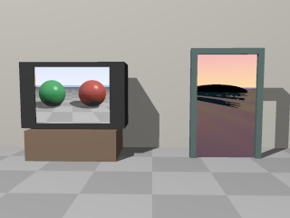 |
|
A screen and a portal in one room. Left: a set whose screen shows a second camera's view of two balls behind the render's camera. Right: a doorway that is a portal onto a sea at sunset, far away in the same scene. |
Before the screen pattern, a television, a monitor or a picture of another part of the scene took two renders. The first renders the scene from the second camera and saves the image to a file; the second render maps that file onto the surface with image_map:
// Render 1, saved as tv.png: the scene from the set's camera.
camera { location <0, 1.3, -7.6> look_at <0, 0.75, -11.5> right x * 4 / 3 angle 55 }
// Render 2: the scene from the render's camera, with the picture on the set.
box { <0, 0, 0>, <1, 1, 0.01> pigment { image_map { png "tv.png" } } scale <1.5, 1.125, 1> }
That works for one still picture, and it costs:
interpolate; far away they are wasted work and alias.There has been no direct way to make an opening in one place show, and lead to, another. The usual substitutes are:
Both features trace their view when the ray that meets them is shaded, inside the same render:
The price is paid during the render instead: a screen traces a whole view ray, with everything that ray goes on to meet, for every sample of the render that lands on it, and a portal carries every ray that enters it on into the other place.
It helps to think of both features in terms of rays rather than of walking through a door.
The screen pattern is a pigment pattern whose colour at a point is what a camera sees at the matching point of its frame. Its syntax is:
pigment {
screen {
camera { CAMERA_ITEMS... }
[fallback { PIGMENT_BODY }]
[max_trace_level LEVEL]
}
[PIGMENT_MODIFIERS...]
}
camera { } | Required. The camera whose view is shown: any camera a scene can have except a mesh_camera, written out or as a declared camera with more items after it, such as camera { View no_radiosity }. Focal blur and a camera normal work as they do for the render's camera. It is not the render's camera and does not replace it. Two screen-only camera items, radiosity_size and no_radiosity, are described in Screen Cameras and Radiosity. |
fallback { } | Optional. The pigment shown, looked up at the point's window position, where the view cannot be traced because views are nested too deep. Without one the screen is black there. |
max_trace_level | Optional, from 1 to 256; by default the scene's max_trace_level. How many screen views may be open around this one before it shows its fallback instead. |
A screen is an ordinary pigment in every other way: it can be one layer of a layered texture under a glossy clear layer, be scaled, rotated, warped and turbulated, and appear inside a pigment_map, an average or a pigment_pattern. A screen is usually given finish { emission 1 diffuse 0 }, so that its picture shows as it was traced rather than being lit again by the scene's lights.
screen and fallback are reserved words; screen may appear only in a pigment.
The view is looked up at the point's x and y, as image_map is: x runs from 0 at the left edge of the camera's frame to 1 at its right edge, and y from 0 at the bottom to 1 at the top. The point's z is ignored. Scale and translate the pigment to place this unit square, the window, on the surface; the camera's frame is stretched to fill it, so give the camera the same shape as the window. A camera's right vector follows the output image's aspect ratio unless it is written, so for a window W wide and H high write right x * W / H and up y.
Outside the window the screen is clear: it returns a fully transmitting colour there, as an image_map with once does outside its image, and whatever is under it shows through.
Inside the window the picture is opaque. The view's background is opaque even under +UA, when the render's own background is transparent, so a screen showing only sky still hides what is behind it.
box
{
<-1.2, 0, 0>, <1.2, 1.5, 0.01>
pigment
{
screen { camera { location <100, 1.2, -5> look_at <100, 0.8, 0> right x * 4 / 3 angle 40 } }
scale <1.2, 0.9, 1> translate <-0.6, 0.3, 0>
}
finish { emission 1 diffuse 0 }
}
|
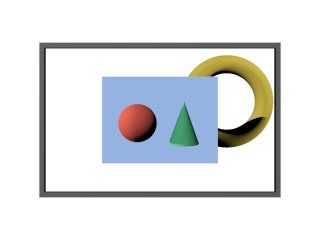 |
|
A panel rendered with |
A screen's view may show a surface with a screen on it, including the screen itself. Every view traced inside another view is one level of nesting. A screen traces its view only while fewer than its max_trace_level screen views are already open around it, counting views of every screen; past that it shows its fallback pigment, or black without one. The limit is checked against the screen being looked at, so screens with different limits can share a scene.
The fallback is looked up at the point's window position, so a pattern in it fills the innermost picture. A noisy pigment looks like a set with no signal:
#declare View = camera { location <0, 0.95, -4.4> look_at <0, 0.8, 0> right x * 4 / 3 angle 50 };
camera { View }
#declare Static = pigment { cells scale <1 / 96, 1 / 72, 1> color_map { [0 rgb 0.05] [1 rgb 0.9] } };
object { Panel(1.6, 1.2, pigment { screen { camera { View } max_trace_level 2 } }, <0.25, 0.35, 0.6>) translate <-0.95, 0.2, 0> }
object { Panel(1.6, 1.2, pigment { screen { camera { View } max_trace_level 2 fallback { Static } } }, <0.6, 0.3, 0.2>) translate <0.95, 0.2, 0> }
|
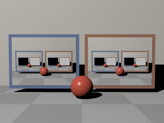 |
|
Two monitors showing the render's own view, nested two deep. At the limit the left one is black and the right one shows its fallback. |
|
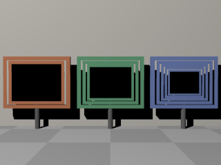 |
|
Three monitors, each showing a camera aimed at itself, with |
A view is not a continuation of the ray that met the screen: it is traced with new rays from the screen's camera, through the point of the camera's frame that the ray met, and nothing of that ray's path or direction carries on. It inherits that ray's weight, so adc_bailout ends faint views early; its limit on reflection and refraction, which starts again from zero inside each view; and its radiosity and subsurface depth. Trace levels and nested views of every kind together are capped by the compile-time NESTED_VIEW_DEPTH_LIMIT; at that cap a screen shows its fallback too.
pigment_map, average or pigment_pattern inside it, as in A Halftone Poster. Where a pigment is evaluated without a surface being shaded, such as a pigment_pattern used in a normal, a pigment turned into a function, or a density, the screen traces nothing and returns no colour.A screen's view is lit by the same radiosity as the rest of the render: one cache serves the render's camera and every screen camera. Radiosity spaces its samples by the distance from the eye; in a screen's view the eye is the screen's camera, so a surface seen through a screen is sampled as densely as that view needs, not as the distant render camera would.
After the render's own pretrace, each screen camera that shows a different view from the render's camera gets a pretrace pass of its own, coarse to fine like the main one, over its own frame. It fills the shared cache without producing pixels, so the cache already holds what the view needs when the final render reaches the screen. A screen that shows the render's own view adds no pass.
Two camera items control this, and apply only to a screen's camera:
radiosity_size <W, H> | The frame of the camera's pretrace pass, in pixels, each from 1 to 65535 (rounded to whole pixels); the render's size by default. The pass uses the render's pretrace_start and pretrace_end spacing and widens its reuse distances by the ratio of the sizes, so a smaller radiosity_size takes fewer samples before the render starts. The samples it leaves out are taken during the final render, where the view needs them, so it moves work from the pretrace into the render rather than changing the picture much. Use it for a small or distant screen. A size outside the range is an error. |
no_radiosity | No pretrace pass for this camera, and its view is shaded with radiosity off, so what it shows gets no bounce light. The render's own view is not affected. As a camera item it is unrelated to the no_radiosity object modifier. |
Either item on the render's own camera draws a warning and is ignored.
pigment { screen { camera { location <0, 1.3, -9> look_at <0, 1.0, -16> right x * 4 / 3 angle 55 radiosity_size <8, 6> } } }
pigment { screen { camera { location <40, 1.3, -9> look_at <40, 1.0, -16> right x * 4 / 3 angle 55 no_radiosity } } }
|
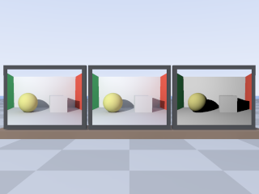 |
|
Three identical corners behind the render's camera, each lit by one lamp, seen only by the screens' cameras. Left: the default pretrace. Middle: |
What radiosity_size changes is where the work is done, not the picture. Rendering this scene at 320 by 240 with the middle screen's camera at the default size and then at <8, 6>:
| middle camera | radiosity samples, all passes | taken during the final render | change in the picture |
| default (320 by 240) | 14,435 | 308 | |
radiosity_size <8, 6> | 10,967 | 565 | mean 0.03 of 255; a few dozen isolated pixels differ by 8 levels or more, at most about 26 |
Screens whose cameras show the same view share one camera: one tracer on each render thread and one radiosity pass. Cameras are compared by content (placement, type, angles, focal blur, distance limit), so two screens with the same camera written out twice share it. A camera with a normal or with user-defined functions only matches itself, never a copy, and a camera with no_radiosity only matches another with no_radiosity. radiosity_size is not compared: cameras that share a view share one pass, as wide as the widest and as tall as the tallest frame any of them asks for, where a camera without radiosity_size asks for the render's size. So one screen without it makes the shared pass full size.
A portal is an object whose body leads elsewhere. A ray entering an open side of the body continues from the mapped point, in the mapped direction. A portal has no look of its own: it is a way through, not a surface. Glass, a frame or a sheen is a separate object of the same shape.
portal {
BODY
to { TRANSFORMATIONS... }
[PORTAL_OPTIONS...]
[OBJECT_MODIFIERS...]
}
BODY:
OBJECT | OBJECT_IDENTIFIER
PORTAL_OPTIONS:
MOUTH_OPTION | near { MOUTH_OPTION... } | far { MOUTH_OPTION... } | far [on | off] |
exit | perturb { normal { NORMAL_BODY } [AMOUNT] } | max_trace_level LEVEL | fallback { PIGMENT_BODY }
MOUTH_OPTION:
front [on | off] | back [on | off] | no_lights [on | off] | pigment { PIGMENT_BODY }
The body comes first. to { } and the options may follow in any order, but all of them come before the object modifiers. A switch written without on or off means on.
to { } | Required. Transformations that carry the body, as written, to its image: where views come out. See The Body and the Map. |
front | Default on for both mouths. Whether a ray entering the front side goes through. |
back | Default off for both mouths. Whether a ray entering the back side goes through. See Mouths and Sides. |
pigment { } | Default none: fully open and untinted. Its opacity says how open the mouth is, its colour tints the view. See pigment. |
no_lights | Default off: lights shine through. See Lights Through Portals. |
near { }, far { } | Mouth options for one mouth only, overriding those written for the portal. Each may be written once. |
far | Default on: the body's image is a second mouth leading back. far off makes the portal one-way. |
exit | Default off. For a finite closed solid: a view ends where the ray would have left the body, and resumes beyond it. See exit. |
perturb { } | Default none. Bends the view by a normal pattern, times AMOUNT (default 1). See perturb. |
max_trace_level | From 1 to 256; by default the scene's max_trace_level. How deep views through portals may nest. See Nesting and fallback. |
fallback { } | Default none. The pigment shown where views nest too deep; without one the portal is absent there. |
portal, to, near, far, exit, front, back, no_lights, perturb and fallback are reserved words.
The body is any object, or a declared object's identifier. It cannot be a portal, hold a portal or be a light source. A union anywhere in the body becomes a merge when the portal is parsed, so the faces inside the union, which a ray would otherwise meet on its way through, do not act as more mouths.
to { } holds transformations (translate, rotate, scale, matrix, transform) applied to the body as written in the portal. The result is the body's image. A ray entering the body at a point continues from that point's image, in the direction's image: a scale in the map makes the far side bigger or smaller, a rotate turns it. The map is fixed in world space. Transformations written after the options, on the portal as an object, move only the body, and its image stays where to { } put it, so a portal moved by a transformation still leads to the same place. The mouth pigments, the perturb and the fallback are written for the body as written and move with it; the far mouth's are carried to it by the map.
// A doorway at x = 1.5 whose views come out at x = 1000, the same way up and facing the same way.
portal { object { Door(1.2, 2.1) translate <1.5, 0, 0> } to { translate <998.5, 0, 0> } far off }
A portal has two mouths. The near mouth is the body. The far mouth is its image under the map, leading back by the inverse map, and it exists by default, so a portal is two-way unless far off says otherwise.
Each mouth has a front side and a back side, and each side is open or closed. A ray goes through only where it enters an open side; where it meets a closed side the mouth is not there for it, and it goes on as if the body were absent. By default the front is open and the back closed, so a portal seen from behind is not there.
inside_vector (with one, a mesh is a closed solid), a patch, or an infinite object such as a plane. Its front is the side its normal points to, met by a ray travelling against the normal. A disc's front is the side its normal vector points to; a polygon's is the side from which its points run clockwise. If a mouth turns out to face the wrong way, swap front and back.The far mouth of a surface faces where views through the near mouth come out: its front is on that side, so looking back into it, from where the views arrive, leads back through the near mouth's front. The far mouth of a closed solid is the image of the solid, front outside, like the near one.
|
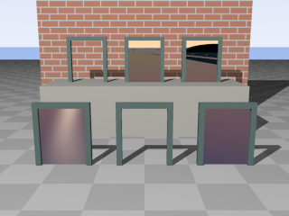 |
|
Three doorways seen from the front (lower row) and three seen from behind (upper row), each leading to the sea. Left: the default, front on and back off. Middle: |
A closed solid is entered from any side of it. In the scene below the sphere and its far mouth are three units apart: looking into the left sphere shows what is behind the right one, and looking into the right one, which is the far mouth, shows what is behind the left. A ray that goes into one sphere comes out of the other's surface, crosses its inside, and leaves through its back faces, which are closed, so it goes on.
cone { <-1.5, 0, 2>, 0.6, <-1.5, 1.8, 2>, 0 pigment { rgb <0.2, 0.35, 0.95> } }
box { <-0.5, 0, -0.5>, <0.5, 1, 0.5> rotate 30 * y translate <1.5, 0, 2> pigment { rgb <0.9, 0.2, 0.15> } }
portal { sphere { <-1.5, 1.1, 0>, 0.75 } to { translate 3 * x } no_lights }
|
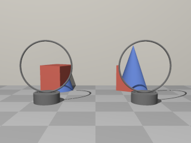 |
|
A portal sphere and its far mouth, each ringed for clarity: the cone and the box trade places. |
A mouth with no open side is not made. A portal none of whose mouths has an open side draws a warning and is left out of the scene.
Mouth options written for the portal apply to both mouths. Written in near { } or far { } they apply to that mouth only and override the portal's. far off removes the far mouth; it cannot be combined with a far { } block.
portal { object { Door(1.0, 1.9) translate XA * x } to { translate -XA * x rotate 180 * y translate XB * x } }
portal { object { Door(1.0, 1.9) translate XA * x } to { translate -XA * x rotate 180 * y translate XB * x } far off }
Here the map turns the doorway round and moves it along: views entering A head away from the camera and come out of B heading towards it, so both mouths face the camera, and each shows the other side of the room, behind the camera, as seen from the other.
|
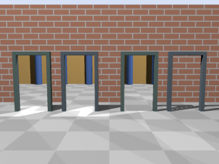 |
|
Two doorway pairs, A then B from left to right. The left pair has its far mouth (the default), so both doorways show the orange wall behind the camera; the right pair is |
portal
{
object { Door(1.0, 1.9) translate -1.1 * x }
to { translate 1.1 * x rotate 180 * y translate 1.1 * x }
pigment { rgb <1, 0.6, 0.3> }
far { pigment { rgb <0.45, 0.7, 1> } }
}
|
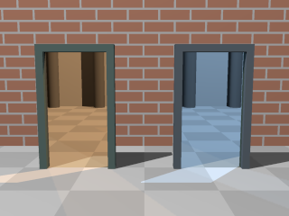 |
|
One doorway pair: the portal's pigment tints both mouths orange, and |
A mouth's pigment says how open the mouth is at each point. Its opacity (one minus filter and transmit) is the share of the ray that goes through; the rest goes on past the body as if the mouth were closed, and the two are mixed. Its colour tints the view. With no pigment, or rgb 1, the mouth is fully open and untinted; rgbt <1, 1, 1, 0.5> is half open; rgbt 1 is shut. A pattern varies the opening over the mouth.
The pigment is part of the portal's options, so it is written before any transformation; a pigment, texture, interior or material among the object modifiers is an error, since a portal has no surface to give it to.
#declare Opening = array[4]
{
pigment { rgb 1 },
pigment { rgbt <1, 1, 1, 0.5> },
pigment { rgb <0.4, 0.6, 1> },
pigment { gradient y color_map { [0 rgbt <1, 1, 1, 1>] [1 rgb 1] } scale 1.8 }
};
portal { object { Door(1.1, 1.8) translate X * x } to { translate Far - X * x } far off pigment { Opening[I] } }
|
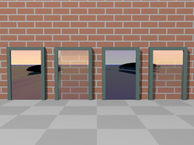 |
|
Four doorways onto the sea in a brick wall: open; half open; tinted blue; and a gradient, shut at the foot and open at the head. |
perturb { normal { NORMAL_BODY } [AMOUNT] } bends each view by the difference between the perturbed normal and the body's true normal, times AMOUNT (1 by default), like looking through rippled water or old glass. A view bent so far that it would turn back out of the surface is mirrored back in, as reflection does. An AMOUNT of 0 is an error: leave the perturb out instead. The perturbation does not change the colour; a normal on the glass in front of the portal is the way to give the opening a visible ripple as well.
portal { object { Door(1.4, 2.0) translate 1.0 * x } to { translate Far - 1.0 * x } far off perturb { normal { ripples 0.35 scale 0.25 translate <1, 1, 0> } } }
|
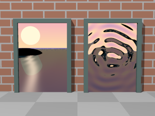 |
|
The same doorway onto the sea twice; the right one bends its view with rippled normals. |
Without exit, a view through a portal carries on into the target for as far as it goes. With exit, on a body that is a finite closed solid, the view reaches only across the image of the body: as far as the ray would have crossed the body itself, scaled by the map. If it finds nothing there, the ray resumes beyond the body, where it would have left it, with the fog and atmospheric media of that stretch applied. So the target is seen only inside the body, as a miniature in a glass ball.
exit needs a finite closed solid, and it implies far off: exit with a far mouth (far on or a far { } block) or with back on is an error. Lights reach out of an exit portal only from inside the body's image.
portal { sphere { <X, 1.1, 0>, 0.485 } to { translate <-X, -1.1, 0> scale S / 0.485 * 0.45 translate Island + <0, 0.6, 0> } exit }
|
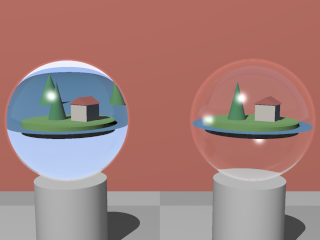 |
|
Two glass balls, each a portal onto the same island, scaled up about 18.6 times. Left: without |
A view through a portal may meet a portal again, including the same one. Each view through a portal inside another is one level of nesting, counted over all portals. A portal leads its view on only while fewer than its max_trace_level portal views are open around it; past that it shows its fallback pigment, evaluated at the point where the ray met it, or, without one, it is absent there and the ray goes on past the body. Going through a portal does not use up a trace level for reflection and refraction, but it does count, with trace levels and screen views, towards the NESTED_VIEW_DEPTH_LIMIT, which ends nesting the same way.
portal { object { Door(1.2, 1.8) translate -1.2 * x } to { translate -3 * z } far off max_trace_level 3 }
portal { object { Door(1.2, 1.8) translate 1.2 * x } to { translate -3 * z } far off max_trace_level 3 fallback { rgb <1, 0.85, 0.2> } }
|
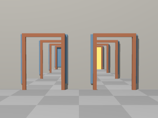 |
|
Each doorway leads to a point three units in front of itself, so its view shows it again, smaller. Left: after three levels the portal is absent and the wall behind shows. Right: its yellow fallback shows instead. |
A point is lit by the lights it can see through a portal. For each mouth and each light, POV-Ray makes the light's image: the light carried back through the mouth's map. Point, spot, cylinder, parallel and area lights all have images. A point is lit by an image along the straight path to it, when that path enters an open side of the mouth as a camera ray would. The two pieces of the path, up to the mouth and from the mapped crossing to the real light, are each shadow-tested in their own part of the scene and attenuated by the media there.
projected_through gets no image, and draws a warning.no_lights on a mouth stops light coming out of that mouth: no light shines out of it by an image, and straight light entering its partner is no longer carried to it, so the partner lets that light pass and casts no shadow (see the next section). A mouth's own shadow therefore follows its partner's setting: near { no_lights } keeps the near mouth's shadow and removes the far mouth's, and no_lights written for the portal removes both. It does not change the view.
light_source
{
Far + <0.3, 1.2, 1.8> rgb <1, 0.6, 0.25> * 4 fade_distance 1 fade_power 2
looks_like { sphere { 0, 0.08 pigment { rgb <1, 0.8, 0.5> } finish { emission 1 diffuse 0 } } }
}
object { Frame(1.0, 2.0, <0.2, 0.3, 0.28>) }
portal { Door(1.0, 2.0) to { translate Far } far off }
Below, a doorway onto a lamp in a closed room far away, in a dim room, with and without no_lights.
|
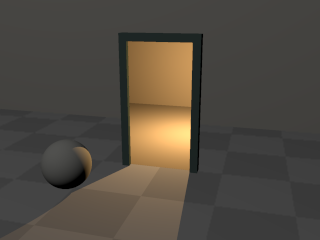 |
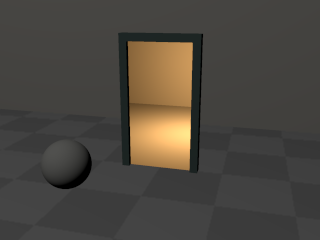 |
|
The lamp's light comes out of the doorway onto the floor and the ball. |
With |
Light that travels straight from a light to a point can meet a mouth on the way. If it enters an open side of the mouth and the partner mouth can carry it out, the light is diverted: it goes through and comes out of the partner, so it does not reach the point, and the mouth casts a shadow, dimmed by its opacity. The partner can carry it out when it exists, its lights are on, and the side the light would come out of is open.
That side has the same name between a surface and its image (light entering a surface's front comes out of its image's front, which faces where views come out) and the opposite name between two closed solids (light entering the outside of one comes out of the inside of the other, which is its back). Without a far mouth, with the partner's matching side shut, or with the partner's lights off, a mouth lets straight light pass and casts no shadow. Light already coming through a portal is diverted in the same way by every other mouth on either piece of its path.
With the default sides, then, a surface portal casts a shadow and a closed-solid portal does not: light entering the near solid's outside would come out of the far solid's inside, and the back is closed by default. Opening the far mouth's back, far { back on }, lets the solid divert light and cast a shadow; it also makes a view that crosses the far solid's inside lead back again.
#declare Disc = disc { <0, 1, 0>, -z, 0.8 };
object { Disc translate -2.2 * x pigment { rgb 0.9 } }
portal { Disc to { translate Far } }
portal { object { Disc translate 2.2 * x } to { translate Far + <30, 0, 0> - 2.2 * x } far off }
|
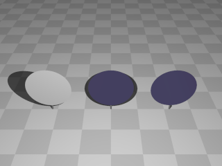 |
|
Three discs lit from in front by one parallel light: a plain disc; a portal disc with its far mouth; and one with |
no_image, no_reflection and no_radiosity work as on any object, for both mouths, and a portal takes them from the union that directly holds it, so a portal can be hidden from the camera and still be seen in a mirror.clipped_by and bounded_by apply to both mouths; the far mouth's are carried by the map.texture, pigment, normal, finish, interior or material among the modifiers is an error. Put glass or a frame on a separate object; the macro Inset in tests/render/portal.inc shrinks a shape by a fraction about its centre, for a portal a hair inside its glass.intersection, difference or merge, and a union that holds a portal cannot be clipped; both are errors.These settings and options change how screens and portals behave.
max_trace_level | Global setting, 5 by default. The default nesting limit of every screen and portal, as well as the limit on reflection and refraction, which starts again inside each screen view and is not used up by going through a portal. A scene of nested glass jars, where each level costs two glass crossings, wants more: global_settings { max_trace_level 16 }. |
adc_bailout | Global setting. A view carries the weight of the ray that met it, times the mouth's opacity for a portal, so a faint view ends as any faint ray does. Lower it to let dim views nest deeper: global_settings { adc_bailout 0.002 }. |
radiosity { } | One cache is shared by the render's camera and every screen camera, with a pretrace pass for each distinct screen camera; see Screen Cameras and Radiosity. Radiosity samples see through portals, but light that came through a portal adds no bounce light (see Known Limits). |
Anti-aliasing, +A | Every anti-aliasing sample of the render looks the screen up again, so its picture is anti-aliased by the render's own sampling, and only where the render refines. With texture footprint filtering (+TF) the screen traces one ray carrying the surface's transformed footprint into its camera; textures seen there filter over that footprint. A footprint does not carry through a portal or across its body. |
Alpha, +UA | A screen's picture is opaque, sky included. A portal's view keeps the alpha of what it shows, so sky seen through a mouth is as transparent as sky seen directly. |
NESTED_VIEW_DEPTH_LIMIT | Compile-time constant in source/core/configcore.h, 512 by default. Caps trace levels plus nested screen and portal views along any path, to bound the stack: each level costs about 3.5 KB. Past it, screens and portals behave as at their own limits. It can be changed only by rebuilding POV-Ray. |
Each of these is a short scene; the excerpt shows the part that matters. The full scenes are in doc/portals and tests/render in the source.
A television is a screen on a slightly convex glass front, with a clear glossy layer over the picture. The macro TV in tests/render/tv.inc builds one; its picture here is a camera in a studio elsewhere in the scene, lit by a light_group of its own.
#declare Broadcast = pigment
{
screen { camera { location S + <0, 1.2, -3> look_at S + <0, 1.15, 0> right x * 4 / 3 angle 40 } }
};
object { TV(1.2, 0.9, Broadcast) translate <0.2, 0.62, -0.1> }
|
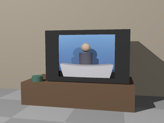 |
|
A television showing a broadcast from a studio elsewhere in the scene. |
Six monitors, each a screen on its own camera, watch a courtyard the render's camera never sees. Their cameras use perspective, fisheye, ultra-wide, panoramic, Mercator and orthographic projections to show that a screen accepts every camera type except mesh_camera. Each camera is a separate view, so each has its own tracer and, with radiosity, its own pretrace pass.
#for (I, 0, 5)
#local Place = <-1.35 + 1.35 * mod(I, 3), 0.95 + 1.05 * (1 - floor(I / 3)), 0>;
box { <0, 0, -0.03>, <1.2, 0.9, -0.02> pigment { screen { camera { Cams[I] } } scale <1.2, 0.9, 1> }
finish { emission 1 diffuse 0 } translate Place - 0.6 * x }
#end
|
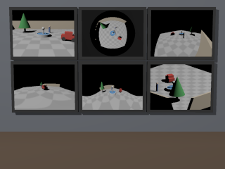 |
|
A wall of security monitors. |
A camera, slightly rolled, looks at a set that shows that camera's view: each picture holds a smaller, turned copy of itself, down to the screen's max_trace_level, where a fallback of cells shows static. The scene is tests/render/screen_feedback.pov, rendered here with Declare=Depth=12.
screen
{
camera { View }
max_trace_level Depth
fallback { cells scale <1 / 96, 1 / 72, 1> color_map { [0 rgb 0.05] [1 rgb 0.9] } }
}
|
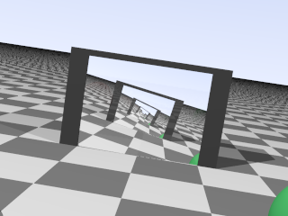 |
|
Video feedback twelve levels deep. |
The picture on a page is a portal, a quad just above the paper, onto a meadow 25 times larger than the page, far away and lit by a light_group of its own. The map is fixed in world space, so the meadow stays put however the book is tilted. The scene is tests/render/portal_book.pov.
portal
{
polygon { 5, <0.35, 0.1605, -0.9>, <0.35, 0.1605, 0.9>, <1.65, 0.1605, 0.9>, <1.65, 0.1605, -0.9>, <0.35, 0.1605, -0.9> }
to { translate <-0.35, -0.161, 0.9> rotate <-90, 0, 0> translate <-0.65, -0.9, 0> scale Zoom translate <MeadowX, Zoom, 0> }
far off
}
|
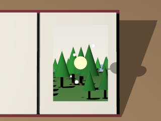 |
|
A picture in a book that is a way into a meadow. |
A door in the back wall of a blue room opens into an orange room a thousand units away, and the orange room's door leads back. The map turns the doorway round, so views going out through the blue room's door come into the orange room. The orange room's lamp shines through into the blue room.
portal { object { Door(1.0, 2.1) translate <0.8, 0, 3.1> } to { translate <-0.8, 0, -3.1> rotate 180 * y translate Warm + <0.8, 0, 3.1> } }
|
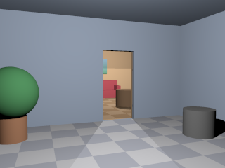 |
|
Through the door of the blue room, the orange room. |
The far end of a short stone tunnel is a portal onto the sea at sunset: there is light at the end of the tunnel. The far mouth leads back, so from the sea the tunnel can be seen, and walked, the other way.
portal { object { Door(2.0, 2.2) translate 5.9 * z } to { translate Far - 5.9 * z } }
|
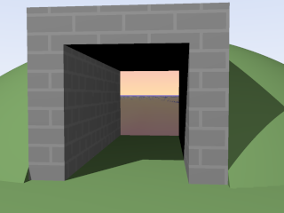 |
|
A tunnel on a hillside that ends at the sea. |
A bell jar on a plinth holds the room it stands in, four times smaller: a person looking at a bell jar on a plinth, inside which is a person looking at a bell jar. The portal is a hair inside the glass, maps the jar's cavity onto the room scaled about the jar's base, and uses exit so each miniature ends at its glass. The scene is tests/render/portal_belljar.pov.
portal { Mouth to { translate -Base scale S translate <B.x, -0.01, B.z> } exit max_trace_level Depth }
|
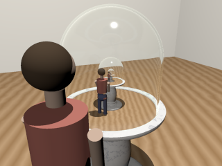 |
|
A room in a bell jar, in a bell jar. |
The doorway pair at night: both lamps are out and a candle burns in the orange room near its door. The candle's light comes through the doorway into the dark blue room, in the shape of the door, as light through a real opening would. The scene is the doorway pair with Declare=Night=1.
light_source
{
Warm + <-0.6, 0.98, 0.6> rgb <1, 0.6, 0.25> * 6 fade_distance 0.8 fade_power 2
looks_like { sphere { 0, 0.035 pigment { rgb <1, 0.8, 0.4> } finish { emission 1 diffuse 0 } } }
}
|
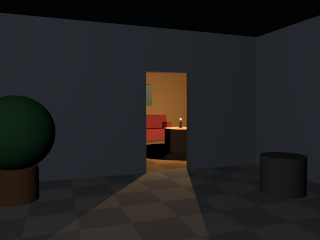 |
|
A candle in one room lighting another through a doorway. |
A screen inside a pigment_pattern gives the brightness of its view as a pattern value, and a pigment_map picks, for each band of brightness, a grid of black dots of one size: a poster printed in halftone, live, from a camera behind the render's.
#macro Dots(R)
function { sqrt(pow(x - floor(x) - 0.5, 2) + pow(y - floor(y) - 0.5, 2)) } color_map { [R rgb 0.04] [R rgb 0.92] } scale <1 / 40, 1 / 30, 1>
#end
#declare Print = pigment
{
pigment_pattern { screen { camera { location <0.3, 1.0, -4.5> look_at <0.3, 0.55, -7.2> right x * 4 / 3 angle 45 } } }
pigment_map
{
#for (K, 0, 7)
[K / 8 Dots(sqrt((1 - (K + 0.5) / 8) / pi))]
[(K + 1) / 8 Dots(sqrt((1 - (K + 0.5) / 8) / pi))]
#end
}
};
|
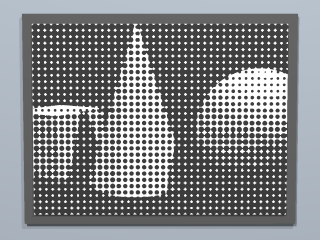 |
|
A halftone print of three white shapes behind the camera. |
A gallery wall compares six live panoramic photographs of one hidden scene using cameras from projections.inc: equirectangular, Mercator, Miller, cylindrical stereographic and equal-area profiles, followed by a Mercator camera whose origins move around an outward cylinder.
#include "projections.inc"
#declare View = CylindricalProjectionCamera(
ProjectionMercator, -35, 40, ProjectionCylinderOrigin, 4, 0,
P, z, x, y
);
pigment { screen { camera { View } } }
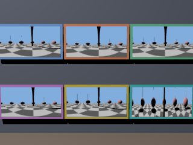 |
The same hidden scene through five vertical maps and an outward origin cylinder. |
An inward origin sphere performs the inverse job. A Mercator screen camera begins at every mapped point on a sphere just outside a procedural globe and fires toward its centre. The resulting live map textures a curled, thickened skein_mesh page on the table beside that globe.
#declare MapView = CylindricalProjectionCamera( ProjectionMercator, -75, 75, ProjectionSphereOrigin, 0.78, 1, GlobeCentre, z, x, y );
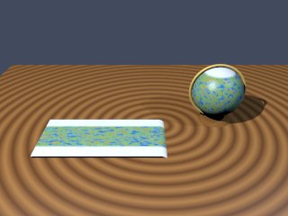 |
A globe sampled inward into a live Mercator map on a curled skein envelope. |
All of these are reported when the scene is parsed.
screen takes only one camera.screen takes only one fallback. | Each may be given once. |
screen needs a camera. | The camera { } is required. |
mesh_camera cannot be a screen's camera. | Any other camera type may be used. |
screen max_trace_level: ... | The level is outside 1 to 256. |
Keyword 'screen' can only be used in a pigment statement. | A screen in a normal, a density or another pattern block. |
radiosity_size needs a width and height from 1 to 65535 pixels. | On any camera. |
portal needs a to { } placing the image of its body. | The map is required. |
A portal's body cannot be or hold a portal, or be a light source. | Portals do not nest in bodies. |
portal takes only one to., ... only one near., ... only one far { }., ... only one far on or far off., ... only one fallback., ... only one perturb. | Each may be given once. |
portal takes only one front. (or back, no_lights, pigment); the same with near or far | A mouth option given twice in the same place. Once for the portal and once in near { } is allowed: that is an override. |
near { } takes only front, back, pigment and no_lights. (or far { }) | Anything else in a mouth block. |
portal max_trace_level: ... | The level is outside 1 to 256. |
far off and a far { } block cannot be combined. | Remove one. |
portal exit needs a body that is a finite closed solid. | exit on a surface or an infinite object. |
exit and a far mouth cannot be combined. | exit with far on or a far { } block. |
exit and back on cannot be combined: a view leaving the body has nowhere to go. | exit with the near mouth's back open. |
A portal's perturb amount cannot be 0; leave the perturb out instead. | |
portal takes no texture, interior or material, and its pigment goes before any transform; give its look to a separate object of the same shape. | A look among the object modifiers, including a pigment written after a transformation. |
A portal cannot be part of an intersection, difference or merge. | Only unions may hold portals. |
A union holding a portal cannot be clipped. | Clip the portal itself instead. |
radiosity_size and no_radiosity apply only to a screen's camera; the render's camera ignores them. | Either item on the render's camera. |
The portal at line N of FILE has no open side, so nothing goes through it. | Every side of both mouths is closed; the portal is left out. |
A camera is inside the body of the portal at line N of FILE, a region that is not there; place the camera at the target instead. | The render's camera or a screen's camera is inside a closed portal body. |
The portal at line N of FILE is placed more than once with the same target, so its far mouths coincide. | A declared portal used twice; give each copy its own to { }. |
A light with projected_through does not shine through portals. | Such lights get no image. |
projected_through lights get no image, so they do not shine through portals (with a warning).no_lights, lets straight light pass and casts no shadow, so a closed-solid portal casts none with the default sides.no_lights; no_lights written for the whole portal takes both mouths out of these tests.Every image in this chapter is made by doc/portals/render.sh in the source from its scene in doc/portals or tests/render, at 320 by 240 pixels, with a fixed stochastic seed (+SS1); doc/portals.md says how to regenerate them. Picture noise, where there is any, differs slightly between builds, so a regenerated image may differ in its last bits without anything having changed.